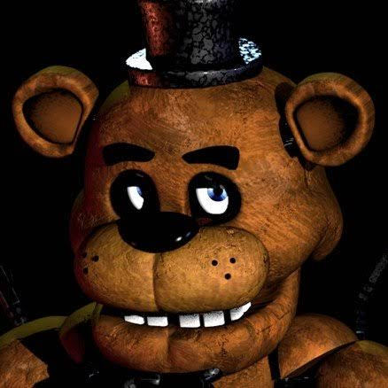
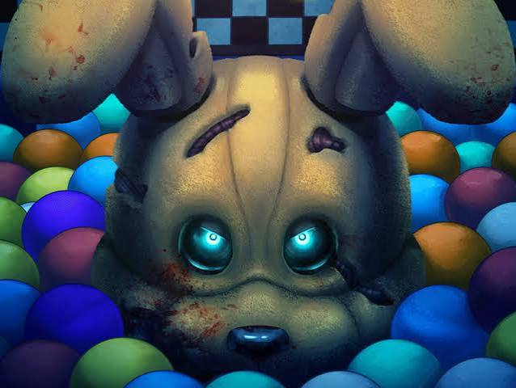
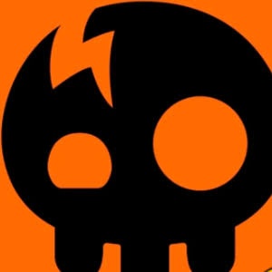

Five Nights at Freddy's es un videojuego de terror independiente del género point-and-click (apuntar y hacer clic), creado por Scott Cawthon y lanzado por primera vez el 8 de agosto de 2014. Desde entonces, el juego ha dado lugar a varias secuelas, distintas series de libros y una película de acción real, cuyas continuaciones se encuentran actualmente en producción.

Five Nights at Freddy’s tuvo una gran influencia en el mundo de los videojuegos y la cultura popular. Su éxito demostró que un juego independiente, creado con pocos recursos pero con creatividad, podía convertirse en un fenómeno mundial. Además, renovó el género de terror al utilizar la tensión, la anticipación y los sustos inesperados en lugar de depender únicamente de imágenes impactantes. Su popularidad también llegó a otros medios, como películas, libros, cómics y productos de merchandising. Por otro lado, su comunidad de fans tuvo un papel muy importante en su crecimiento, creando teorías, dibujos, historias y canciones. Estas teorías ayudaron a mantener el interés por la historia y generaron debates sobre los misterios de la franquicia, convirtiendo a FNaF en una de las sagas de terror más reconocidas y comentadas por su comunidad.

Una aportación importante para la visibilidad de la saga de five nights at freddy's fue la banda The Living Tombstone, el cual es un dúo de rock compuesto por Yoay Landau y Sam Half. Mucha de su discográfica esta basada en videojuegos y medios de la cultura pop en el cual entra fnaf,gracias a su contribución con la trilogía de canciones basadas en los primeros juegos. Incluso una de sus canciones formaron parte de los créditos de la primera película de la franquicia en 2023